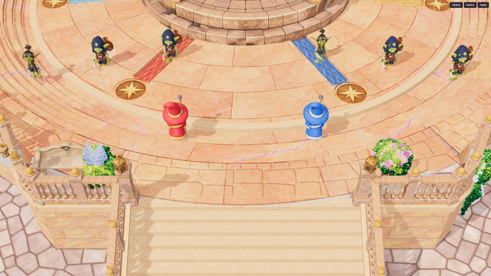
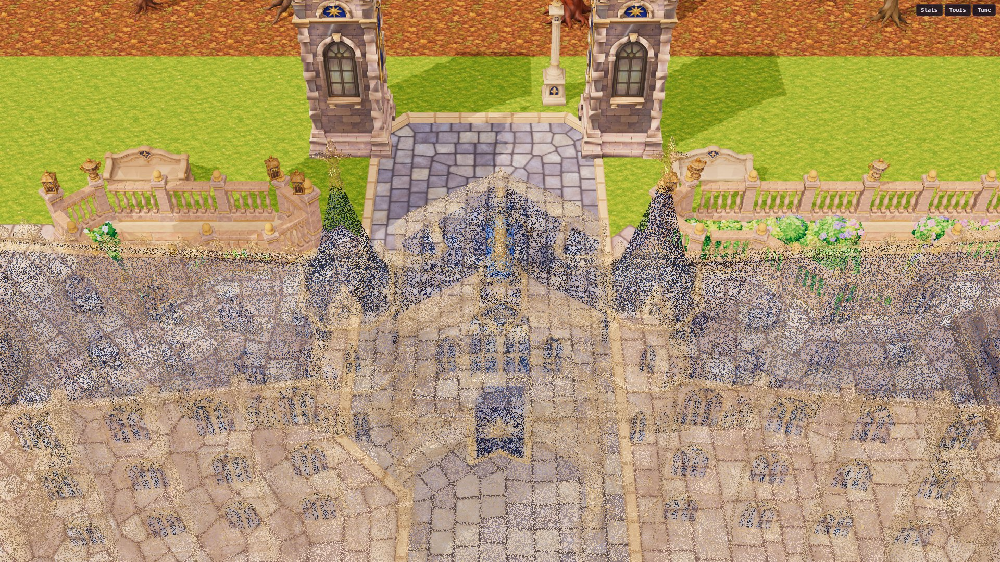
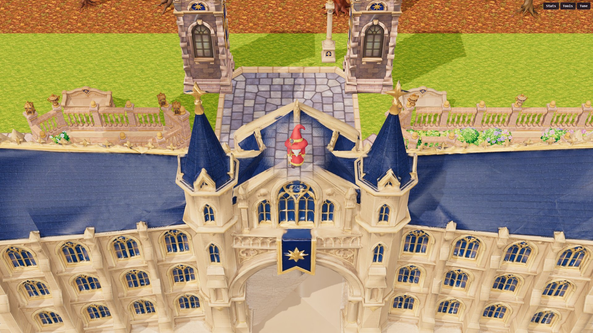
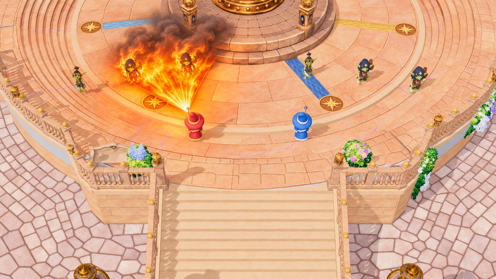
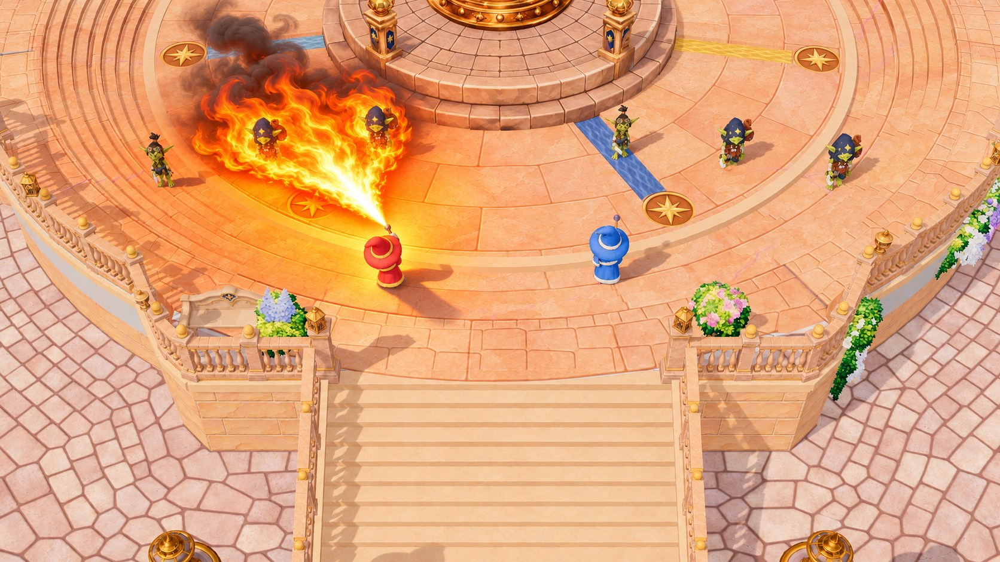
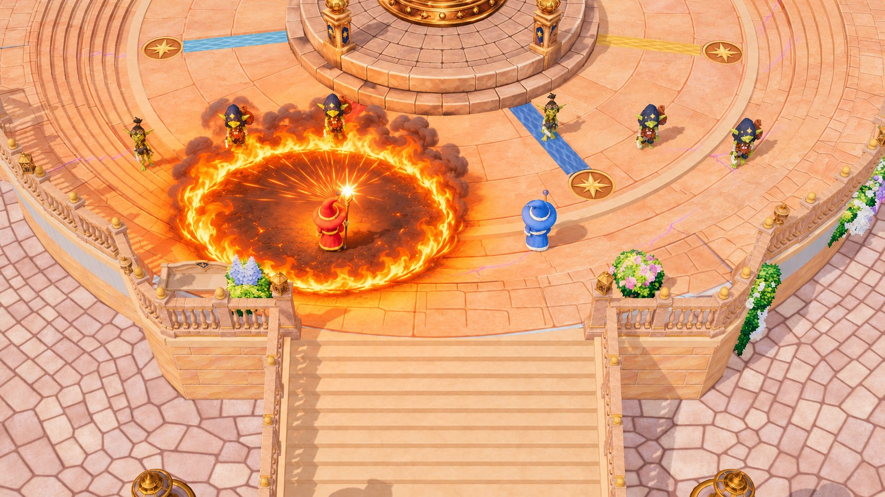
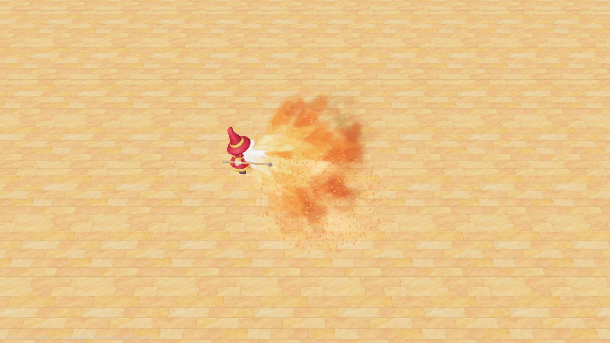
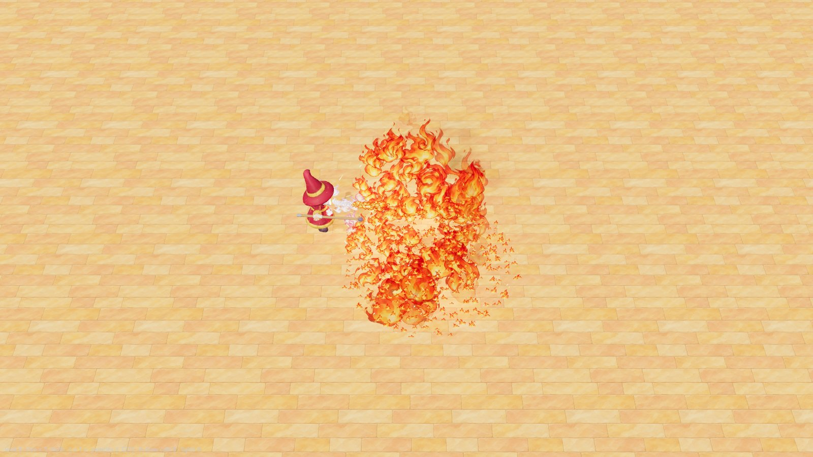
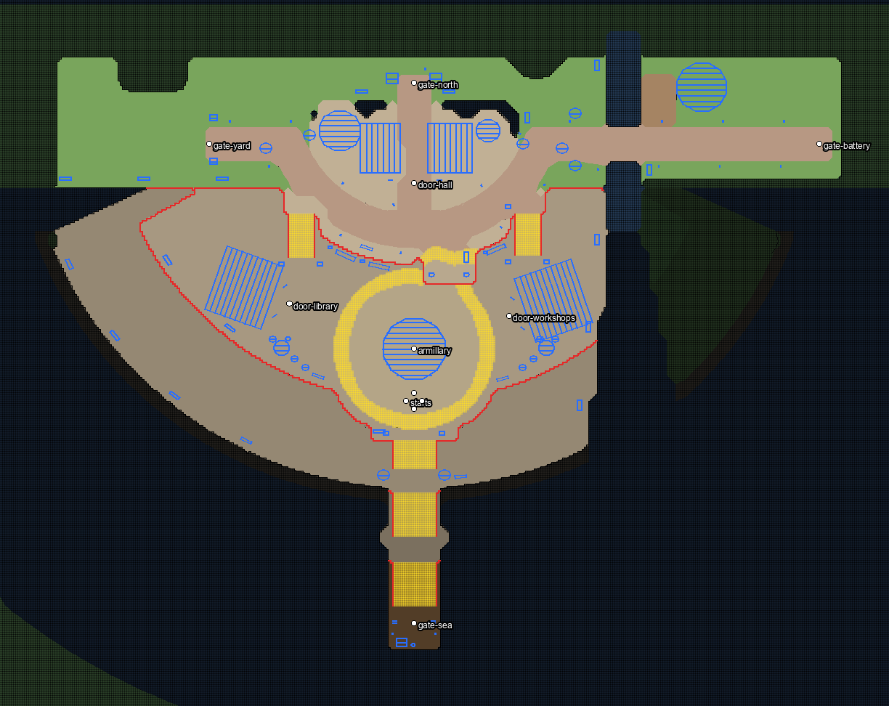

<title>The Court in 3D</title>
<meta name="claude:viewport-fit-sides" content="cover">
<link rel="preconnect" href="https://fonts.googleapis.com">
<link rel="stylesheet" href="https://fonts.googleapis.com/css2?family=Space+Grotesk:wght@500;700&family=Inter:wght@400;500;600&family=JetBrains+Mono:wght@400&display=swap">
<style>
/* Layout: one reading column of sections; each section is a question, its pictures, and its answer box beside the text. Sandstone and seat-blue from the court itself. */
:root {
  --bg: #f6f1ea;
  --panel: #fffaf3;
  --fg: #2a241d;
  --muted: #6d6256;
  --line: #e2d6c4;
  --accent: #b8692b;   /* the court's warm sandstone, deepened */
  --seat: #2f5fae;     /* the blue wizard's robe */
  --chosen: #f0dcc3;
  --display: "Space Grotesk", "Segoe UI", system-ui, sans-serif;
  --body: "Inter", "Segoe UI", system-ui, sans-serif;
  --mono: "JetBrains Mono", ui-monospace, Consolas, monospace;
}
@media (prefers-color-scheme: dark) { :root:not([data-theme="light"]) {
  --bg: #1b1814; --panel: #24201b; --fg: #efe6da; --muted: #a89b8a; --line: #3a332b;
  --accent: #e39a5a; --seat: #7fa6ea; --chosen: #4a3524; color-scheme: dark } }
:root[data-theme="dark"] {
  --bg: #1b1814; --panel: #24201b; --fg: #efe6da; --muted: #a89b8a; --line: #3a332b;
  --accent: #e39a5a; --seat: #7fa6ea; --chosen: #4a3524; color-scheme: dark }
body { background: var(--bg); color: var(--fg); font-family: var(--body); font-size: 15px; line-height: 1.55;
  padding-left: max(16px, env(safe-area-inset-left, 0px)); padding-right: max(16px, env(safe-area-inset-right, 0px)); padding-block: 0 4rem; }
main { max-width: 1100px; margin: 0 auto; display: grid; gap: 3rem; }
header { padding-block: 2.5rem 0.5rem; display: grid; gap: 0.75rem; }
.eyebrow { font-family: var(--mono); font-size: 12px; letter-spacing: 0.08em; text-transform: uppercase; color: var(--accent); }
h1 { font-family: var(--display); font-size: clamp(2rem, 5vw, 3rem); line-height: 1.05; margin: 0; text-wrap: balance; }
h2 { font-family: var(--display); font-size: 1.5rem; margin: 0; text-wrap: balance; }
h3 { font-family: var(--display); font-size: 1rem; margin: 0; }
p { margin: 0; max-width: 68ch; }
.lede { font-size: 1.05rem; color: var(--muted); }
.hero { border-radius: 10px; overflow: hidden; border: 1px solid var(--line); }
.hero img { display: block; width: 100%; }
section { display: grid; gap: 1.25rem; border-top: 1px solid var(--line); padding-top: 2rem; }
.top { display: grid; grid-template-columns: minmax(0, 1fr) minmax(260px, 340px); gap: 1.5rem; align-items: start; }
.top > div { min-width: 0; display: grid; gap: 0.75rem; }
@media (max-width: 760px) { .top { grid-template-columns: 1fr; } }
.shots { display: grid; gap: 1rem; grid-template-columns: repeat(auto-fit, minmax(280px, 1fr)); }
.shots.wide { grid-template-columns: 1fr; }
figure { margin: 0; display: grid; gap: 0.4rem; min-width: 0; }
figure img { width: 100%; display: block; border-radius: 6px; border: 1px solid var(--line); cursor: zoom-in; }
figcaption { font-size: 13px; color: var(--muted); }
figcaption b { color: var(--fg); font-weight: 600; }
.answer { background: var(--panel); border: 1px solid var(--line); border-radius: 10px; padding: 1rem; display: grid; gap: 0.75rem; }
.answer .q { font-weight: 600; }
.rec { font-size: 13px; color: var(--muted); }
.rec b { color: var(--accent); }
.choices { display: flex; flex-wrap: wrap; gap: 0.4rem; }
.choices button { font: inherit; font-size: 14px; padding: 0.35rem 0.75rem; border-radius: 999px; border: 1px solid var(--line); background: transparent; color: var(--fg); cursor: pointer; }
.choices button:hover { border-color: var(--accent); }
.choices button[aria-pressed="true"] { background: var(--chosen); border-color: var(--accent); font-weight: 600; }
.choices button:focus-visible, textarea:focus-visible { outline: 2px solid var(--seat); outline-offset: 2px; }
textarea { font: inherit; font-size: 14px; width: 100%; min-height: 4.5rem; resize: vertical; padding: 0.5rem; border-radius: 6px; border: 1px solid var(--line); background: var(--bg); color: var(--fg); box-sizing: border-box; }
.status { font-family: var(--mono); font-size: 11px; color: var(--muted); min-height: 1em; }
ul { margin: 0; padding-left: 1.2rem; max-width: 68ch; display: grid; gap: 0.3rem; }
.mono { font-family: var(--mono); font-size: 13px; }
.facts { display: grid; grid-template-columns: repeat(auto-fit, minmax(170px, 1fr)); gap: 0.75rem; }
.fact { border-left: 2px solid var(--accent); padding-left: 0.75rem; }
.fact .n { font-family: var(--display); font-size: 1.35rem; font-variant-numeric: tabular-nums; }
.fact .l { font-size: 13px; color: var(--muted); }
dialog { border: 0; padding: 0; background: transparent; max-width: 96vw; max-height: 96vh; }
dialog img { max-width: 96vw; max-height: 92vh; display: block; border-radius: 6px; }
dialog::backdrop { background: rgba(0,0,0,0.8); }
@media (prefers-reduced-motion: no-preference) { .choices button { transition: background 120ms, border-color 120ms; } }
</style>

<main>
  <header>
    <div class="eyebrow">Port to 3D · step 0 · 2026-11-25</div>
    <h1>The Court in 3D</h1>
    <p class="lede"><b>New since your pass: <a href="#fire2">Fire, round 2</a>, concept art to pick a direction from.</b> The game now runs on a second page, <span class="mono">play3d.html</span>, in the map editor's courtyard: the real sim, the real models, the kit's lighting, the game camera. Four things to decide before step 1 builds on them. Each box saves as you click; a box you leave empty means my recommendation stands.</p>
    <div class="hero"></div>
  </header>

  <section id="camera">
    <div class="top">
      <div>
        <h2>How far back the camera sits</h2>
        <p>The camera looks down from the south at 46°, through a narrow 28° lens, and never turns. The only knob is how much ground fits top to bottom. The pixel game shows 33.75 units of height on a 1080p screen, of which 21.25 are the play area between the sky strip and the rune bar.</p>
        <p>At 34 the models read small and the plaza is whole. At 20 the wizards are big, but you see little of what's coming. 26 is between.</p>
      </div>
      <div class="answer" data-id="cam" data-rec="26">
        <div class="q">Which distance?</div>
        <div class="choices" role="group" aria-label="Camera distance">
          <button type="button" data-v="20">20 u</button><button type="button" data-v="26">26 u</button><button type="button" data-v="34">34 u</button><button type="button" data-v="other">Other</button>
        </div>
        <div class="rec">Recommended: <b>26 u</b>, then tune it in play.</div>
        <textarea id="note-cam" aria-label="Note on the camera distance" placeholder="Anything about the framing"></textarea>
        <div class="status"></div>
      </div>
    </div>
    <div class="shots">
      <figure><figcaption><b>20 u</b> · close</figcaption></figure>
      <figure><figcaption><b>26 u</b> · recommended</figcaption></figure>
      <figure><figcaption><b>34 u</b> · the pixel game's full height</figcaption></figure>
    </div>
  </section>

  <section id="fade">
    <div class="top">
      <div>
        <h2>Seeing a wizard behind a building</h2>
        <p>A steep 3D camera lets walls hide you, which the flat pixel rooms never did. Here the red wizard stands on the road behind the great hall. Without help it vanishes. The first fix faded whole pieces, which turned the hall into noise. The second cuts a soft dithered hole through whatever stands between the camera and a local wizard, and only there.</p>
        <p>Not yet judged in the court's narrow corners. A goblin silhouette through walls comes with the goblins in step 4.</p>
      </div>
      <div class="answer" data-id="fade" data-rec="hole">
        <div class="q">Keep the dithered hole?</div>
        <div class="choices" role="group" aria-label="Hidden wizards">
          <button type="button" data-v="hole">Keep the hole</button><button type="button" data-v="silhouette">Silhouette instead</button><button type="button" data-v="redo">Try again</button>
        </div>
        <div class="rec">Recommended: <b>keep the hole</b>, add silhouettes in step 4, judge both in tight spots.</div>
        <textarea id="note-fade" aria-label="Note on hidden wizards" placeholder="Size of the hole, its edge, what it should spare"></textarea>
        <div class="status"></div>
      </div>
    </div>
    <div class="shots">
      <figure><figcaption><b>Nothing</b> · the wizard is behind the hall</figcaption></figure>
      <figure><figcaption><b>Whole pieces fade</b> · first try, rejected</figcaption></figure>
      <figure><figcaption><b>A dithered hole</b> · recommended</figcaption></figure>
    </div>
  </section>

  <section id="bodies">
    <div class="top">
      <div>
        <h2>The characters without the pixel filter</h2>
        <p>The same models and the same posing code as the pixel game, now standing in the scene, lit by the court's sun and casting shadows. Scale stays the pixel game's (the wizard 2.7 u, about 1.6 m), and the hat hiding the face is the intended look. The strip under each shot is today's pixel version, for comparison.</p>
        <p>What still reads badly:</p>
        <ul>
          <li>the four common goblins share one lime green and read alike at the game distance;</li>
          <li>the chieftain's maul head is a plain box, and the flame sword has no flame yet (both were 2D effects);</li>
          <li>the Mirror guard reads as a pale board;</li>
          <li>close up, the Meshy textures are blotchy and the wizard's hands are mittens.</li>
        </ul>
        <p>The bright orange floor in these two shots is a test paving, not the court's.</p>
      </div>
      <div class="answer" data-id="bodies" data-rec="keep">
        <div class="q">Are the unfiltered models the way forward?</div>
        <div class="choices" role="group" aria-label="Characters">
          <button type="button" data-v="keep">Yes, fix the list</button><button type="button" data-v="redo">Needs more first</button><button type="button" data-v="pixel">Bring the pixel look back</button>
        </div>
        <div class="rec">Recommended: <b>yes</b>; the fixes join step 4 (goblins) and the effects pass (sword, guards).</div>
        <textarea id="note-bodies" aria-label="Note on the characters" placeholder="Which model bothers you most"></textarea>
        <div class="status"></div>
      </div>
    </div>
    <div class="shots wide">
      <figure><figcaption><b>The band attacking</b> · 26 u, the game's distance</figcaption></figure>
      <figure><figcaption><b>Close up</b> · casting Force, the flame sword, the Mirror carried, the Ember raised</figcaption></figure>
    </div>
  </section>

  <section id="fire2">
    <div class="top">
      <div>
        <h2>Fire, round 2: from concept art</h2>
        <p>You turned down both built looks, so this round started from pictures. Codex repainted the court shot with a Fire spray in seven styles, then a burning floor and a fire ring for the strongest. 24 images in all are in <span class="mono">docs/reference/spell-concepts/fire/</span>; these are the best of each.</p>
        <ul>
          <li><b>Toon volume:</b> the best-looking fire. A white-hot core leaves the staff and swells into a rolling flame body with a red rim, dark smoke at the far end.</li>
          <li><b>Hybrid:</b> the toon body with straight white streaks fanning from the staff to the cone's edges. The most readable cone.</li>
          <li><b>Magicka jets:</b> a crisp fan of streaks from one point, close to a sparkler.</li>
          <li><b>Painted ribbons, dragon breath, cel:</b> flat like a decal, lava rather than fire, or a comic sticker pasted on the court.</li>
        </ul>
        <p>The floor that works is a low carpet of short flames on charred stone, not a campfire. All of them show that on the court's pale stone, fire needs a white core, a dark rim, smoke or char to stand out.</p>
      </div>
      <div class="answer" data-id="fire2" data-rec="hybrid">
        <div class="q">Which direction to build?</div>
        <div class="choices" role="group" aria-label="Fire direction">
          <button type="button" data-v="toon">Toon volume</button><button type="button" data-v="hybrid">Hybrid</button><button type="button" data-v="jets">Magicka jets</button><button type="button" data-v="other">Other</button>
        </div>
        <div class="rec">Recommended: <b>hybrid</b>. Streaks over the first third of the cone give it its shape, painted toon flame cells give the body, smoke only off the far end. The current effects base can build it with a new painted flame sheet. Its risk: too many streaks and it reads as orange energy.</div>
        <textarea id="note-fire2" aria-label="Note on the fire direction" placeholder="What to keep or change from the pictures"></textarea>
        <div class="status"></div>
      </div>
    </div>
    <div class="shots">
      <figure><figcaption><b>Hybrid</b> · recommended</figcaption></figure>
      <figure><figcaption><b>Toon volume</b></figcaption></figure>
      <figure><figcaption><b>Magicka jets</b></figcaption></figure>
      <figure><figcaption><b>Painted ribbons</b></figcaption></figure>
      <figure><figcaption><b>Dragon breath</b></figcaption></figure>
      <figure><figcaption><b>Cel, hard edges</b></figcaption></figure>
      <figure><figcaption><b>The floor</b> · a low carpet of flame on char</figcaption></figure>
      <figure><figcaption><b>The ring</b> · hybrid</figcaption></figure>
      <figure><figcaption><b>The layers</b> · core, body, licks, embers, smoke, scorch, light</figcaption></figure>
    </div>
  </section>

  <section id="fire">
    <div class="top">
      <div>
        <h2>Fire, round 1: two built looks (you chose neither)</h2>
        <p>The first spell family on the new effects base. Every particle is worked out from time and a seed alone, so rollback and freezing a moment still work, and the drawn fan is the sim's own hit cone. Two looks with the same motion:</p>
        <ul>
          <li><b>A</b>: soft particles shaped and coloured by code. It reads as orange smoke on sunlit stone.</li>
          <li><b>B</b>: each particle is a frame from a sheet of flames painted by Codex. It reads as fire.</li>
        </ul>
        <p>B's faults for the next round: it looks more like a bonfire than a jet leaving the staff; at full flow the fan goes hollow in the middle; and the burning floor is too even, with no grow-in.</p>
      </div>
      <div class="answer" data-id="fire" data-rec="b">
        <div class="q">Which direction for fire?</div>
        <div class="choices" role="group" aria-label="Fire look">
          <button type="button" data-v="a">A, code-shaped</button><button type="button" data-v="b">B, painted sheets</button><button type="button" data-v="neither">Neither</button>
        </div>
        <div class="rec">Recommended: <b>B</b>, keeping A's code layers that work in both (embers, the char bed, the fan of light).</div>
        <textarea id="note-fire" aria-label="Note on fire" placeholder="What fire should feel like"></textarea>
        <div class="status"></div>
      </div>
    </div>
    <div class="shots">
      <figure><figcaption><b>A</b> · 5 runes, spray and floor</figcaption></figure>
      <figure><figcaption><b>B</b> · 5 runes, spray and floor</figcaption></figure>
      <figure><figcaption><b>B in the court</b> · 3 runes on the plaza</figcaption></figure>
    </div>
    <div class="shots wide">
      <figure><figcaption><b>B, 5 runes</b> · 0.1, 0.3, 0.6, 1 and 2 s</figcaption></figure>
      <figure><figcaption><b>A, 5 runes</b> · the same moments</figcaption></figure>
      <figure><figcaption><b>B sweeping</b> · flames in flight keep their line, like a hose</figcaption></figure>
      <figure><figcaption><b>B's floor</b> · 0.2, 1, 8, 16 and 16.6 s, dying to char</figcaption></figure>
    </div>
  </section>

  <section id="walk">
    <div class="top">
      <div>
        <h2>The ground the sim walks on</h2>
        <p>The court's sim room now comes from the map editor's scene, so there is one map. Walkable ground is light, blocked ground hatched, stairs yellow, walls black, cliffs red, building and prop footprints blue, and the scene's new markers labelled. Height edges are walls both ways for now; the room file also keeps each edge's kind and height for shots over parapets later.</p>
        <p>Known flaws: the ring of steps round the sunk plaza comes out as a wide band, and curved walls are small stair-steps. Neither shows in the 3D picture.</p>
      </div>
      <div class="answer" data-id="walk" data-rec="ok">
        <div class="q">Does the walkable area match the court?</div>
        <div class="choices" role="group" aria-label="Walk grid">
          <button type="button" data-v="ok">Looks right</button><button type="button" data-v="wrong">Something's off</button>
        </div>
        <div class="rec">Recommended: <b>looks right</b>. Say where if not.</div>
        <textarea id="note-walk" aria-label="Note on the walk grid" placeholder="A place you should or shouldn't be able to walk"></textarea>
        <div class="status"></div>
      </div>
    </div>
    <div class="shots">
      <figure><figcaption><b>The whole court</b> · gates at the yard, battery, north and sea</figcaption></figure>
      <figure><figcaption><b>The sea stairs</b> · three flights, their landings joined</figcaption></figure>
    </div>
  </section>

  <section id="numbers">
    <h2>Weight, before anyone else plays it</h2>
    <p>Measured on the dev machine (Radeon 780M, 1920 × 1080), before any batching. Fine here, too heavy for a friend's laptop. Batching the kit and loading only the court's models come before the swap.</p>
    <div class="facts">
      <div class="fact"><div class="n">43 fps</div><div class="l">23 ms a frame in the court</div></div>
      <div class="fact"><div class="n">2,565</div><div class="l">draw calls a frame</div></div>
      <div class="fact"><div class="n">104 MB</div><div class="l">downloaded on first load</div></div>
      <div class="fact"><div class="n">4.4–5.7 s</div><div class="l">load to the built scene, locally</div></div>
    </div>
  </section>

  <section id="general">
    <div class="top">
      <div>
        <h2>Anything else</h2>
        <p>Next is step 1 and 2: walking and casting in the court with every spell drawn as its hit shape, the HUD back over the 3D view, and a flat practice ground to replace the Sanctum. Then the swap.</p>
      </div>
      <div class="answer" data-id="general">
        <div class="q">Notes</div>
        <textarea id="note-general" aria-label="General notes" placeholder="Anything the port should do differently"></textarea>
        <div class="status"></div>
      </div>
    </div>
  </section>
</main>
<dialog id="zoom"></dialog>

<script>
const zoom = document.getElementById('zoom');
for (const img of document.querySelectorAll('figure img')) img.addEventListener('click', () => { zoom.querySelector('img').src = img.src; zoom.querySelector('img').alt = img.alt; zoom.showModal(); });
zoom.addEventListener('click', () => zoom.close());

const boxes = [...document.querySelectorAll('.answer')];
const state = {};
function paint(box) {
  const s = state[box.dataset.id] || {};
  for (const b of box.querySelectorAll('.choices button')) b.setAttribute('aria-pressed', String(b.dataset.v === s.choice));
  const ta = box.querySelector('textarea');
  if (document.activeElement !== ta) ta.value = s.note || '';
}
function setStatus(box, text) { box.querySelector('.status').textContent = text; }
for (const box of boxes) for (const b of box.querySelectorAll('.choices button')) b.setAttribute('aria-pressed', 'false');

(async () => {
  const db = window.claude ? await window.claude.use('db') : null;
  if (!db) { for (const box of boxes) setStatus(box, 'Sign in to save answers.'); return; }
  const col = db.collection('answers');
  const save = async (box, patch) => {
    const id = box.dataset.id;
    state[id] = { ...(state[id] || {}), ...patch, at: new Date().toISOString() };
    paint(box); setStatus(box, 'Saving…');
    try { await col.doc(id).set(state[id]); setStatus(box, 'Saved'); }
    catch (e) { setStatus(box, 'Not saved: ' + (e && e.code ? e.code : 'error') + '. Try again.'); }
  };
  for (const box of boxes) {
    for (const b of box.querySelectorAll('.choices button')) b.addEventListener('click', () => save(box, { choice: b.dataset.v }));
    const ta = box.querySelector('textarea');
    let timer = 0;
    ta.addEventListener('input', () => { clearTimeout(timer); setStatus(box, 'Typing…'); timer = setTimeout(() => save(box, { note: ta.value }), 900); });
  }
  const t = setTimeout(() => { for (const box of boxes) if (!box.querySelector('.status').textContent) setStatus(box, 'Saved answers did not load.'); }, 10000);
  col.onSnapshot((snap) => {
    clearTimeout(t);
    for (const d of snap.docs) state[d.id] = d.data();
    for (const box of boxes) paint(box);
  }, () => { clearTimeout(t); for (const box of boxes) setStatus(box, 'Saved answers did not load.'); });
})();
</script>
